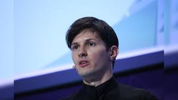

Telegram founder Pavel Durov is under formal investigation in France for his alleged involvement in organised crime activities facilitated through the messaging platform. A French judge granted Durov bail on Wednesday, requiring him to pay €5 million, police report twice weekly, and remain within French territory. Durov’s legal troubles stem from accusations that Telegram has been complicit in enabling illicit activities such as child exploitation, drug trafficking, and fraud, as well as refusing to cooperate with authorities. Durov was initially arrested at a Paris airport on Saturday, sparking significant debate about the balance between free speech and law enforcement. The French authorities’ move to formally investigate Durov highlights ongoing concerns about Telegram’s role in criminal activities and its lack of cooperation with judicial requests. The investigation began in February and is part of a broader effort by European law enforcement to hold tech platforms accountable for illegal activities. The situation has strained diplomatic relations between France and Russia. Russian officials, including Foreign Minister Sergei Lavrov, have criticised France’s actions, while the Kremlin has offered support to Durov due to his Russian citizenship. However, Durov’s multiple citizenships, including French and UAE, complicate the situation.
Telegram, known for its commitment to free speech and privacy, has faced criticism for being a platform where extremist groups, conspiracy theorists, and political dissidents can operate with little oversight. Despite these concerns, Telegram has defended its moderation practices, stating that they comply with the EU laws and are continually improving. French President Emmanuel Macron, an active Telegram user who granted Durov French citizenship in 2021, has insisted that the legal actions against Durov are not politically motivated. As the investigation continues, it will test the limits of free speech and the responsibility of tech companies in the digital age.
